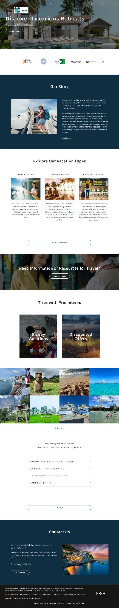

Real project · Travel website
ZenTravels
A travel-focused website arranged to make vacation discovery and the next customer step feel simpler.
What the business needed
The site needed to present different vacation ideas, offers and travel information without making prospective travelers sort through an unstructured collection of options.
What was built
The experience was arranged around clearer travel discovery, supporting resources and contact paths so visitors could move from inspiration toward a practical next step.
What is easier now
A visitor can explore the type of trip or offer that interests them, use the supporting information and move toward contact without losing the thread of the journey.